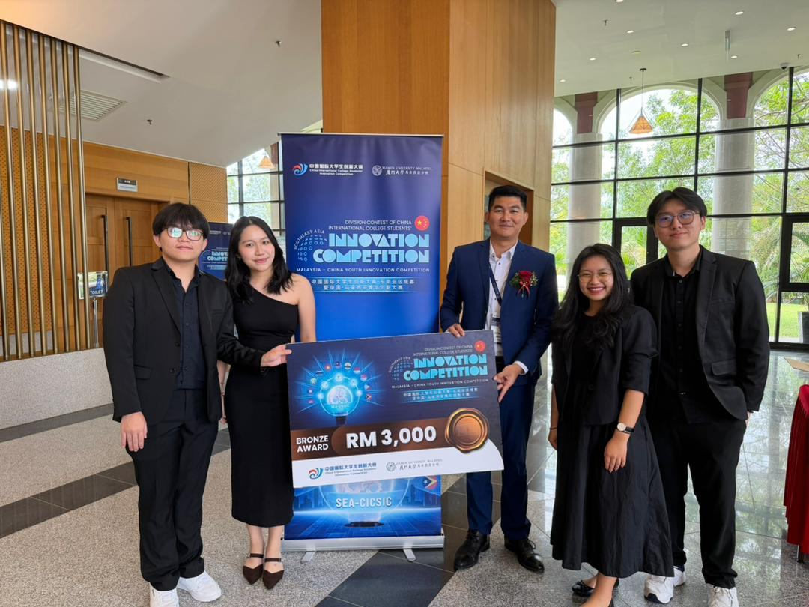
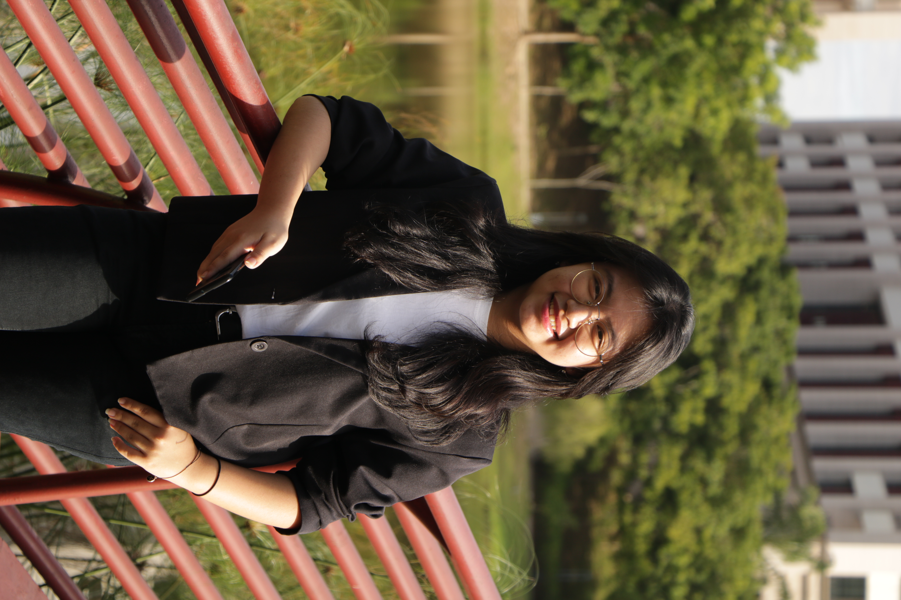

Achievement
About us
Students engineering team working across cybersecurity, software engineering and environmental science to bring i-BIS from prototype to a field-ready system.
Bachelor of Engineering in Cyber Security
Bachelor of Engineering in Software Engineering

Bachelor of Engineering in Software Engineering
Bachelor of Engineering in Software Engineering
Faculty mentors: Dr. Saif Kifah Jihad (School of Computing and Data Science), Dr. Abdul Khaliq Rasheed (School of New Energy and Engineering), Dr. Chew Sook Chin (China-ASEAN College of Marine Sciences), Dr. Lim Kean Chong (China-ASEAN College of Marine Sciences), Ir. Dr. Wong Voon Loong (School of New Energy and Engineering), Dr. Hakim Abdulrab (School of Artificial Intelligence and Robotics), all at Xiamen University Malaysia.